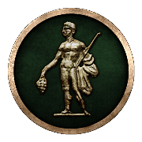
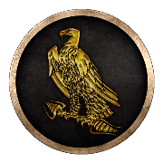
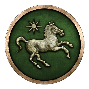
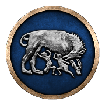
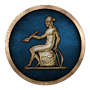
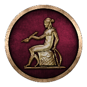
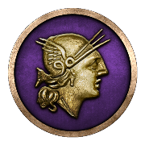

RTR: Imperium Surrectum
RTR: Imperium SurrectumFactions you cannot play
None of these can be picked when you start a campaign. The computer runs them; where a revolt lets you take over its rebels, the revolt's page says so.
| Faction | What it is | Faction | What it is | Faction | What it is | Faction | What it is |
|---|---|---|---|---|---|---|---|
| Settlements that belong to no faction. They hold 500 regions at the start of the campaign. |  Hellenistic Rebels | Holds no land at the start of the campaign, and no revolt creates it. |  Ptolemaic Rebels | Appears in The Ptolemaic Revolt. |  Roman Rebels (first civil war) | Appears in The Roman Civil Wars. | |
 Roman Rebels (second civil war) | Appears in The Roman Civil Wars. |  Seleucid Rebels (Asia Minor) | Holds 4 regions at the start of the campaign and gains more in The Seleucid Revolts. |  Seleucid Rebels (Upper Satrapies) | Appears in The Seleucid Revolts. |  The Roman Senate | Appears in The Roman Civil Wars. |